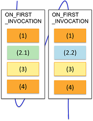

Test suite level
In the test suite level, you must select SEMIPARALLEL for Site Control in the SmarTest testflow tool.
You can put if (CURRENT_SITE_NUMBER()... around or inside the
RDI_BEGIN and RDI_END block.
Workflow
The following code structure is an example with numbers to indicate the execution steps.
ON_FIRST_INVOCATION_BEGIN();
...(1)
if (CURRENT_SITE_NUMBER() == 1 || CURRENT_SITE_NUMBER() == 3)
...(2.1)
else
...(2.2)
...(3)
...(4)
ON_FIRST_INVOCATION_END();
The following figure indicates the execution sequence of the code structure.

SmartRDI code structure
The following code indicates the structure of SmartRDI code for semi-parallel tests in the test suite level.
ON_FIRST_INVOCATION_BEGIN();
CONNECT();
rdi.dc().pin("PVI8").vForce(2).execute();
RDI_BEGIN();
rdi.func().label("TestMode_Enable").execute();
rdi.wait(1 ms);
if (CURRENT_SITE_NUMBER() == 1 || CURRENT_SITE_NUMBER() == 3)
rdi.pmux().pin("010102").selectOn().execute();
else
rdi.pmux().pin("010101").selectOn().execute();
rdi.dc("semi").pin("PVI8").vMeas().execute();
rdi.func().label("TestMode_disable").execute();
RDI_END();
rdi.dc().pin("PVI8").disconnect().execute();
ON_FIRST_INVOCATION_END();
rdi.id("semi").getValue();